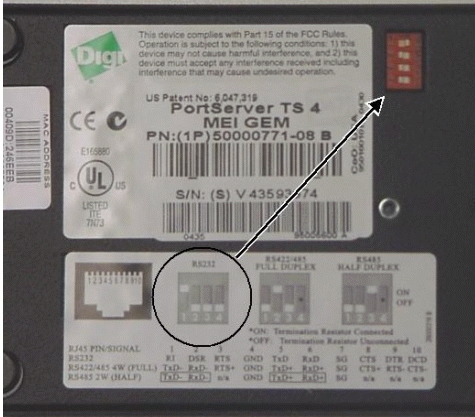
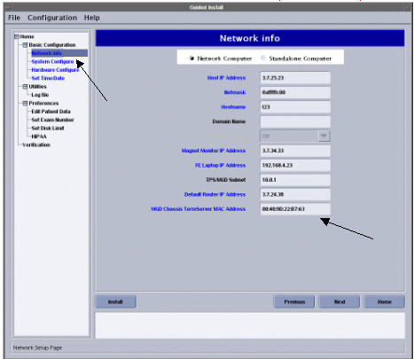

Operating Documentation
Direction 5133330-3, Rev# 14
Signa EXCITE HD 3.0T Service Methods
Module Version 2.0, Version Date 6/19/09
Operating Documentation |
| Required Persons | Preliminary Reqs | Procedure | Finalization |
|---|---|---|---|
| 1 |
| Last Update | 11/11/2004 |
Remove the power from the Term Server by removing the power input. Remove the cables noting their original location.
Illustration 1: Power Cord

Verify jumper settings for Term Server. Switch 1 should be in the “on” or up position, switches 2, 3, 4 should be “off” or down. (see Illustration 2)
Illustration 2: Switch Settings

Record the MAC address on the replacement Term Server. If there is a MAC Address label on the front of the AC Distribution module, be sure to cross out the old MAC address and replace it with the MAC address written on the new term server.
Example of MAC address is 20:2D:90:22:44
Install the replacement Term Server.
Perform factory reset on the replacement Term Server:
Remove power connector from termserver.
Press and hold the small square button, labeled 'reset' next to power jack.
Connect power to termserver, while continuing to hold in reset button.
Continue to hold reset button until the POWER LED blinks on and off in a 1:5:1 sequence. If you interrupted the continuous hold momentarily, by slip/mistake, the 1:5:1 will not appear. If this is the case repeat till LED blink sequence is as noted. Once this LED is on continuosly, it has received its IP from host.
Change the Term Server MAC address
Go into [Guided Install]
Click on the [Term Server] selection, see Step Illustration 3.
Enter the address as shown in Step Illustration 3.
The Term Server information must be entered in the following format:
20:2D:90:22:44 use colons between two digits, letters are case sensitive.
Illustration 3: TERM SERVER SCREEN

No finalization steps.